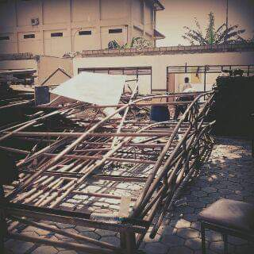
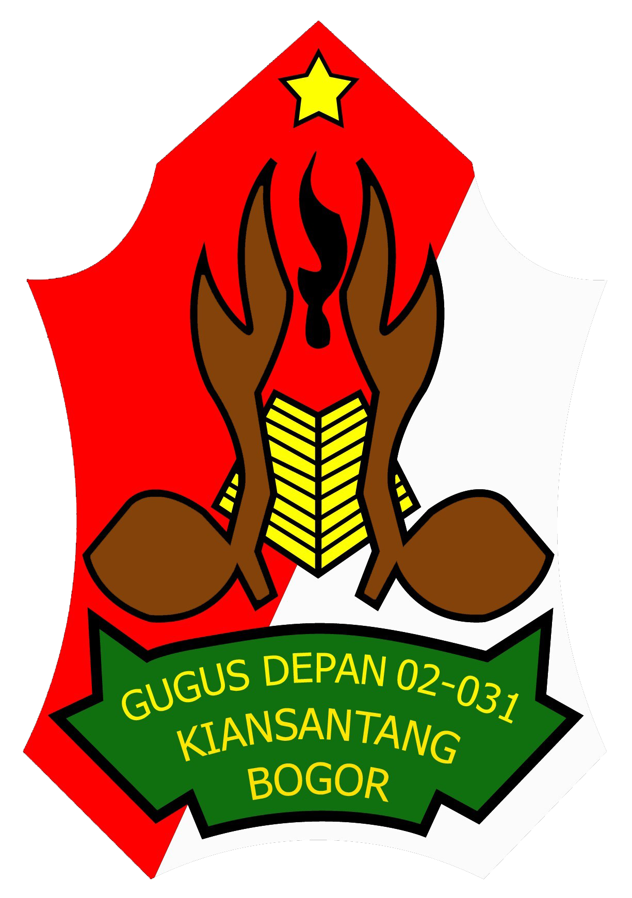

Maret 1973 lalu, cikal bakal Pramuka MAN 2 Kota Bogor didirikan. Saat itu, MAN 2 Kota Bogor masih bernama Pendidikan Guru Agama Negeri (PGAN) Bogor. Mungkin satu di antara anggota Pramuka MAN 2 Kota Bogor memiliki orang tua yang pernah menimba ilmu di almamater tercinta itu.
Keberadaan Pramuka masa kini dan masa lalu tentu berbeda. Dulu saat baru berdiri, karena keberadaan awal mula Pramuka di PGAN Bogor baru sekitar sepuluh tahunan dari berdirinya Gerakan Pramuka di Indonesia, maka semangat pergerakannya pun masih terasa. Di mana-mana pemerintah menggembar-gemborkan Gerakan Pramuka, apalagi keberadaan Gerakan Pramuka berdasarkan Anggaran Dasar (AD)-nya langsung berada di bawah naungan Majelis Pembimbing Nasional (Mabinas) sekaligus Pramuka Utama, yakni oleh Presiden RI. Di tambah lagi, kegiatan Kepramukaan merupakan ekstrakurikuler (ekskul) wajib di setiap sekolah, tidak terkecuali dengan PGAN saat itu.
PGAN Bogor seperti ladang segar bagi kegiatan kepramukaan. Pasalnya, kala itu belum banyak ekskul seperti sekarang. Oleh karena itu, Pramuka menjadi ekskul wajib bagi seluruh siswa PGA. Maka tidak aneh bila Kak Suryaman (sesepuh Kiansantang dan mantan Pembina Pramuka di MAN 2 Kota Bogor) sering mengenang dalam tiap pelantikan dan Hari Ulang Tahun (HUT) Gudep dengan menyatakan "dulu, Bantara itu banyak sekali. Kalo baris, semuanya hijau-hijau dipundaknya”, kenang Kak Suryaman.
Memasuki paruh awal tahun 1990an (kalau tidak salah, tahun 1992), PGAN Bogor berubah menjadi MAN 2 Kota Bogor. Dari sana, suhu kegiatan kesiswaan pun berubah, termasuk kegiatan ekskul.
Lain dulu, lain sekarang. Jika dulu hampir ratusan anggota mengikuti perkemahan dan memakai TKU Bantara, namun saat ini hanya puluhan yang mengikuti kegiatan perkemahan semacam Masa Pelantikan Calon Anggota (Mapelca) dan Ujian Kenaikan Tingkat. Hal ini disebabkan oleh semakin bertambahnya ekskul di MAN 2 Bogor dan, kemungkinan siswa mulai jenuh dengan kegiatan di Pramuka.
Meski anggota Pramuka MAN 2 Kota Bogor tidak sebanyak seperti dua puluhan tahun yang lalu, namun semangatnya akan lebih dari yang dulu. Saat ini, dengan keberadaan lima pembina di Pramuka MAN 2 Kota Bogor, dapat dipastikan Pangkalan tergiat ini akan melaju cepat mengejar ketertinggalan. Dengan memadukan kegiatan akademis, keterampilan, dan spiritual, para pembina merasa yakin dapat membangun Pramuka MAN 2 Kota Bogor lebih baik.
 Kenapa Pramuka MAN 2 Kota Bogor mempunyai nama ambalan Kiansantang dan Diah Pitaloka? Karna MAN2 Kota Bogor terletak di Padjajaran, yang tepatnya Padjajaran itu adalah tempat kerajaan Prabu Siliwangi. Pembina Pramuka MAN 2 Kota Bogor berinisiatif mencari dan menelusuri info tentang keturunan yang masih ada dari Prabu Siliwangi. Pembina Pramuka MAN 2 Kota Bogor pun berhasil mencari keturunan terakhir dari anaknya Prabu Siliwangi, yaitu Kiansantang.
Dan akhirnya pembina Pramuka MAN 2 Kota Bogor segera mendatangi keturunan terakhir dari Kiansantang yang berada di daerah Sukabumi dan langsung meminta izin dengan ingin menggunakan nama Kiansantang tersebut. Pada akhirnya pembina Pramuka pertama MAN 2 Kota Bogor diberikan izin oleh keturunan terakhir dari Kiansantang untuk menggunakan nama Kiansantang. Selanjutnya setelah diberikan izin langsung dibuatlah bentuk dari badge ambalan Kiansantang Pramuka MAN 2 Kota Bogor.

Mengapa Pramuka MAN 2 Kota Bogor memilih Diah Pitaloka untuk dijadikan nama ambalan? Karena, diambil dari karakter seorang Diah Pitaloka yang memiliki banyak sifat seperti tangguh, keras, dan pemberani serta menunjukkan bahwa Diah Pitaloka bukanlah Putri yang lemah. Diah Pitaloka termasuk wanita yang sangat menonjol pada zaman kerjaan sunda yang memiliki paras yang cantik. Dilihat dari karakter tersebut bisa kita kaitkan bahwa Pramuka MAN 2 Kota Bogor ingin menjadikan generasi penerus yang sama kepribadiannya dengan Diah Pitaloka.
Berikut adalah prestasi kami dari 2018 sampai saat ini.
| Nama Prestasi | ||
|---|---|---|
| Juara 1 Solo Vocal Putra GEBYAR X 2018 | Juara 2 Utama Primitive Cooking Putri Wukuf 2019 | Juara 3 kreasi teknologi tingkat kota bogor |
| Juara 2 Solo Vocal Putri GEBYAR X 2018 | Juara 2 Utama Video Kreatif Wukuf 2019 | |
| Juara 2 P3k GEBYAR X 2018 | Juara 3 Madya Tahfidz Wukuf 2019 | |
| Juara 3 Peta Mapping GEBYAR X 2018 | Juara 3 Toya Semaphore Dance TUNAS 2019 | |
| Juara 2 LKBBT GEBYAR X 2018 | Juara Favorit Video Bakti Purna TUNAS 2019 | |
| Juara 1 Utama Cover Theme Song Wukuf 2019 | Juara Ambassador TUNAS 2019 | |
| The Best Clip Cover Theme Song Wukuf 2019 | Peserta Peransaka Jawa Barat 2018 | |
| 1st Runner Up Duta Wukuf 2019 Putra | Peserta Pertikawan Nasional 2019 | |
| 4th Runner Up Duta Wukuf 2019 Putra | Peserta Kemah Budaya Pramuka DI Yogyakarta 2019 | |
| Juara Favorit Duta Wukuf 2019 Putra | Peserta Kemah Riset Nasional V IPB 2019 | |
| Juara Favorit Duta Wukuf 2019 Putri | Peserta Scouting Skill & Scouting Bound Management Jawa Barat 2019 | |
| Juara Intelegensia Duta Wukuf 2019 Putra | peserta West Java Expedition Instructor Course 2019 | |
| Juara 2 Utama Video Kreatif Wukuf 2019 | Juara 3 Pentas Seni WJEIC 2019 |
Jl. Raya Pajajaran No.6, RT.01/RW.03, Baranangsiang, Kec. Bogor Tim., Kota Bogor, Jawa Barat 16143
0821-9930-7375 | 0895-3069-4947